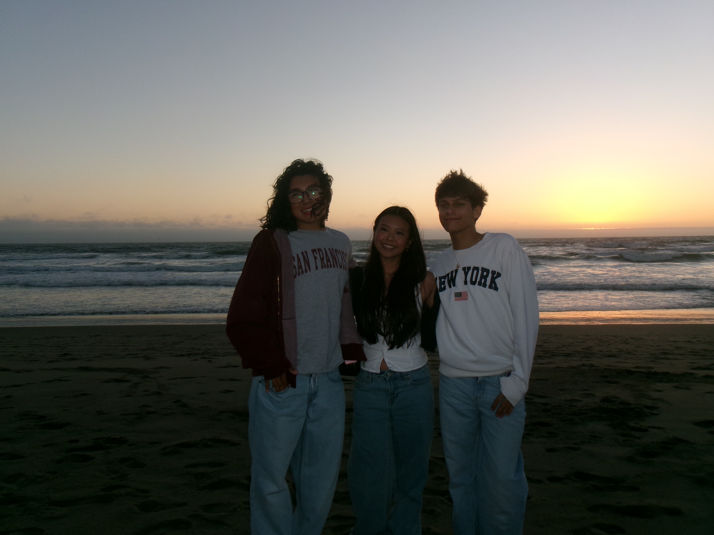

I can separate this with a line
Later, I definitely want to experiment with adding images like a heart to make my entry website look like my sketch. I also want to try changing the background color to a pink as well. I've also been wondering if there's a way to change pages by clicking on a photo. I think that'd be a fun way of navigating my site. As this site gets bigger I might need to change some things around. I think it'll mostly be having to organize what sites I want viewers to see first. Something I'm wondering about is that in the video lecture, it said I have to change the style sheet to css/"folder name".css but when I changed it, it made my backgrounds white instead of the tan color. So I changed all of them back to css/style.css and it finally worked. So I guess I'm just confused on why it wasn't working when I was trying to follow the instructions. I think overall, this is a fun project and I always enjoy learning something new. I will say it's very time consuming, though. But getting to troubleshoot and see my site actually work makes it very satisfying.
I styled the landing page by making the background a light blue as well as adding a white dotted border and changing the font to Helvetica. With my other pages, I did different pastel colors like pink and purple that still match the vibe of my landing page. I also tried out different borders like dashed, solid, and double, but still kept the color white to match as well. I also decided to experiment with different fonts like Monaco and Roboto on the other pages. I think what changed was that my pages started to look a lot more cohesive and gave off a softer vibe which is what I wanted. At first I was having troubles to actually get the colors to change on my website. I couldn't figure out what was wrong and I got frustrated. Since I couldn't figure it out, I copied the stylesheet code from a page that was working and pasted it into the one that wasn't. I then changed the color, font, and border to the one I wanted. Then when I refreshed the page it finally worked and I was able to get everything sorted out from there. I think something that still feels unresolved is that I'm trying to change the font of just the navigation links, but I can't figure out how.

Revisiting my Point of Entry helped me see how my original sketch could translate into an actual HTML and CSS webpage. Overall, I stayed close to my original wireframe and did not make any major changes to the layout. I added a loading heart GIF that matched the idea from my sketch and moved the navigation links to the bottom of the page, which I also planned in my original design. I also removed the “Landing Page” title and replaced it with “My Interactive Sketchbook” to make the purpose of the site clearer. I added my name and a short introduction explaining what the sketchbook contains, along with directing viewers to the links below to explore my work. For the CSS, I focused on keeping the layout simple and organized so that the main elements were easy to understand and navigate. I think the biggest improvement is that the page now feels more personal and connected to my original concept. However, I still feel like the design could be more unique, and I may experiment with different visual elements as the project grows. The growing navigation may also require me to rethink the spacing and layout. Looking ahead, I expect some of my existing pages may need redesigning to keep everything visually consistent as I add more content and pages to my Interactive Sketchbook.